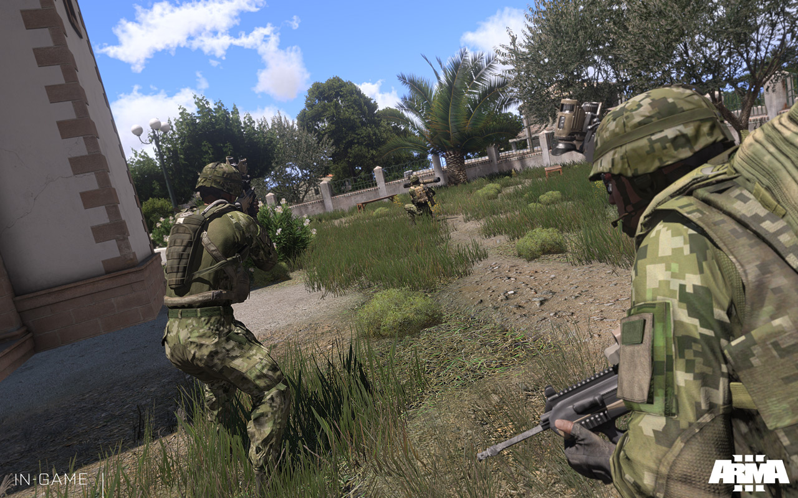

ARMA III
Arma 3, desenvolvido pela Bohemia Interactive é um dos melhores jogos do mercado para quem procura um verdadeiro simulador militar. Com um visual e uma jogabilidade ainda melhores do que aqueles de seus predecessores, o jogo parece tentar ser um grande sandbox para todo tipo de campanha militaresca, que tende apenas a crescer mais conforme a comunidade for produzindo mais conteúdo para o mesmo.
O mundo de Arma 3 é situado em um pequeno arquipélago no mar Egeu, com cerca de 270 Km de extensão, incluindo grandes planícies, e as regiões profundas do oceano. Os jogadores terão a sua disposição todo tipo de veículo militar, de caças a submarinos, passando por clássicos do gênero como tanques de guerra. Situado em 2030, quase todos os veículos ainda são reconhecíveis, apesar de muita coisa nova que hoje em dia ainda se encontra em desenvolvimento dando muito liberdade criativa para os desenvolvedores.
JogabilidadeArma 3 funciona em grande parte como um jogo normal de tiro em primeira pessoa. A grande diferença se encontra na preparação para o mesmo, já que você poderá armar verdadeiros planos de combate, coordenar operações que envolvam dezenas de veículos e muito mais. O jogo também oferece um bom modo de treinamento para quem não está familiarizado com os seus comandos. O principal destaque de Arma 3 é o seu editor de cenários e de campanha, fazendo com que todos os jogadores tenham acesso a dezenas de cenários diferentes, tornando o jogo sempre novo e instigante. Tudo isso é feito através do Steam Workshop, que torna o processo ainda mais fácil, já que você não precisará de se registrar em sites de mods ou semelhantes.
Infelizmente, Arma 3 ainda não teve o seu modo single-player (ou a campanha oficial) lançado, e no momento ele existe apenas como um jogo de guerra em sandbox, com campanhas criadas por outros usuários.
ApresentaçãoArma 3 é um dos mais belos jogos para PC, com gráficos para invejar os fãs de Crysis. Da escala dos combates até o realismo evidenciado pelo movimento da água e da grama.
A interface dos menus, a organização do editor e toda a identidade visual do jogo, mostra que os desenvolvedores tiveram uma preocupação em criar um produto coeso e funcional para que todos conseguissem utilizar com facilidade. Da criação de mapas, até a concepção de planos de ataque ou batalha, tudo é muito intuitivo e fácil de usar.
O áudio do jogo também é de excelente qualidade, graças a efeitos sonoros com um forte sentido de realismo. O maior problema de Arma 3 é que o seu framerate sofre muito em computadores que não sejam top de linha, e até agora nenhum patch conseguiu corrigir verdadeiramente este erro.
ConclusãoArma 3 é o jogo definitivo da série combinando tudo o que os desenvolvedores aprenderam ao longo dos anos. Um dos melhores jogos de tiro em primeira pessoa unido de uma comunidade incrível que sabe se aproveitar de seu editor de campanhas para criar conteúdos tão bons quanto os oficiais.